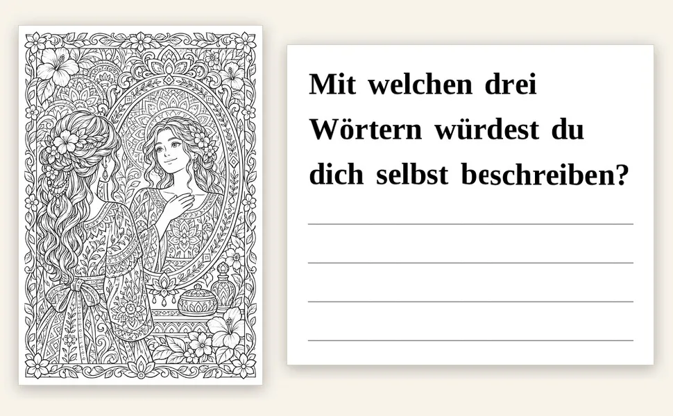

Selbstbewusst, ich werde mir selbst bewusst
Deine Gedanken, Gefühle und Muster besser kennenlernen, damit du sicherer auftrittst. Mit kurzen Übungen für den Alltag.
Öffnet amazon.de in einem neuen Tab.
Du sagst Ja, obwohl du Nein meinst? Erst dir selbst bewusst werden, dann sicherer auftreten.
Du hast eine gute Idee und sagst nichts. Eine Freundin fragt, ob du beim Umzug hilfst, und du sagst Ja, obwohl du eigentlich keine Kraft mehr hast. Oft fehlt in solchen Momenten nicht Wissen, sondern ein Stück Vertrauen in die eigene Wahrnehmung. Selbstbewusst heißt wörtlich: sich seiner selbst bewusst sein. Wissen, was du denkst, fühlst und willst. Dabei zählen auch die unangenehmen Gefühle, denn auch Ärger, Angst oder Scham sagen dir etwas über dich. Die Beispiele im Buch kommen aus Schule, Ausbildung, Job und Familie. Selbstbewusstsein wächst durch Tun, nicht durch Lesen.

Blick ins Buch
Blick ins Taschenbuch: Arbeitsseite und Ausmalbild aus Kapitel eins
Neun Kapitel mit je drei Teilen führen von den Grundlagen und der Selbstreflexion über Gedanken, Körper und Gespräche bis zu Grenzen, Rückschlägen und Wegen zur Vertiefung. Viele Abschnitte enden mit einer kleinen Übung für den Alltag. Im Taschenbuch folgt nach jedem Unterkapitel eine Arbeitsseite mit Fragen und Linien zum Hineinschreiben, und am Ende jedes Kapitels wartet ein Ausmalbild, wenn du mal nicht denken, sondern nur etwas mit den Händen machen willst. Ausfüllen musst du nichts. Es hilft aber, Gedanken aufzuschreiben, statt sie nur zu denken. Im Anhang stehen die Quellen zu den erwähnten Arbeiten und Anlaufstellen, wenn es dir schlecht geht.
Vier Übungen aus dem Buch für deinen Alltag
Jeden Abend drei Fragen
Setz dich abends mit Stift und Papier hin: Was war heute gut, auch wenn es nur eine Kleinigkeit war? Was hat dich beschäftigt, und was sagt dir das über dich? Was nimmst du dir für morgen vor? Nach einer Woche liest du alles durch.
Dein Satz für die Woche
Such dir einen einzigen Satz für eine Situation, die dir gerade schwerfällt. Widerspricht dein Kopf heftig, mach ihn kleiner. Häng ihn dorthin, wo du ihn siehst, und sag ihn dir eine Woche lang vor dieser Situation.
Ein kleines Ziel pro Tag
Nimm dir morgens ein kleines Ziel vor, das ein bisschen Mut braucht, etwa eine Frage im Unterricht oder eine Mail, die du aufschiebst. Leg fest, wann und wo du es tust. Abends schreibst du auf, wie es war, ohne dich dafür zu verurteilen.
Bewusst da sein
Im Bus, in der Pause oder vor einem wichtigen Gespräch: Spür ein paar Atemzüge lang deinen Atem, geh mit der Aufmerksamkeit durch deinen Körper und frag dich, was du gerade denkst und fühlst. Für das Gefühl reicht ein Wort.
Dieses Buch ist ein Ratgeber und kein Ersatz für eine Therapie oder Beratung. Wenn es dir gerade richtig schlecht geht, hol dir bitte Hilfe, zum Beispiel bei der Telefonseelsorge unter 0800 111 0 111 (kostenlos, rund um die Uhr).
Öffnet amazon.de in einem neuen Tab.
Passt auch dazu


Mehr zum Thema Persönlichkeitsentwicklung
 In 30 Tagen zur emphatischeren Persönlichkeit30 Tage lang jeden Tag ein Beispiel aus dem Alltag und eine kurze Übung, um Empathie zu üben.
In 30 Tagen zur emphatischeren Persönlichkeit30 Tage lang jeden Tag ein Beispiel aus dem Alltag und eine kurze Übung, um Empathie zu üben. In 30 Tagen weg vom eigenen NarzissmusEigene narzisstische Züge erkennen und ändern: 30 Tage, jeden Tag ein Thema und eine Aufgabe.Positiv, die Kraft positiver GedankenWie du Gedanken wie „Das schaffe ich eh nicht“ bemerkst, prüfst und durch fairere ersetzt.
In 30 Tagen weg vom eigenen NarzissmusEigene narzisstische Züge erkennen und ändern: 30 Tage, jeden Tag ein Thema und eine Aufgabe.Positiv, die Kraft positiver GedankenWie du Gedanken wie „Das schaffe ich eh nicht“ bemerkst, prüfst und durch fairere ersetzt.